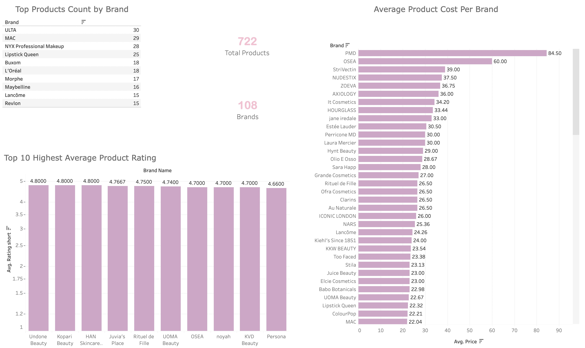

I'm a data analyst currently working remotely in Austin, Texas in the healthcare sector. My current day-to-day consists of utilizing R programming and SQL databases to pull ad-hoc reports. I'm detailed and thorough to ensure the data is reflected correctly and analyzed effectively. Thorough knowledge and understanding of HIPAA procedures and policies. While also ensuring management and clients are given the data that they need. Responsible for the creation/upkeep of various automated reports I have created over time. Able to communicate data analysis conclusions and work effectively with colleagues of various backgrounds and departments.
-
Global Causes of Death
See Code
See Dashboard
-
Yelp Data Pull
For this project, the Yelp Fusion API was used to obtain the data of 1000 restaurants in Corpus Christi, Texas, and surrounding regions. Once the data was extracted from Yelp, it was then stored in an SQLite database. Google sheets allowed for the data to be updated automatically using a task schedule on the server. Tableau public was then connected to the existing google sheet, and a dashboard was created.
See Code
See Dashboard
-

Ulta Data Scrape w/Beautiful Soup
The Ulta Data Pull utilized Beautiful Soup and Python to parse through the HTML content to obtain the relevant data needed. The scraped data pertained only to lip products such as product name, description, price, and rating. After the data pull was complete, it was then written to a CSV file and pulled into Tableau Public.
See Code
See Dashboard
-
US Gift Allocation
Sed lorem amet ipsum dolor et amet nullam consequat a feugiat consequat tempus veroeros sed consequat.
See Dashboard
-
SQL
-
Python
-
R
-
Tableau
-
Excel
- Report and Research Analysis Data Visualization: Tableau Public, Excel, Google Sheets
- Programming Languages: R, Python & Javascript
- SQL: Postgresql, MySQL, MYSIS, DI
- Other Technologies: VSCode, Git, Jupyter Notebooks, Kaggle
- Ability to quickly learn new systems and adapt to changing procedures
- Microsoft Office Suite (Outlook, Word, Powerpoint, Access)
- Advanced Microsoft Excel (including PivotTables and Vlookup)
- Worked with highly sensitive patient info
Data Analyst
Clinical Pathology Laboratories - Austin, Texas
July 2021 - Current
- Wrote complex SQL queries to obtain data to be utilized in ad hoc and automated reports
- Utilized various languages and tools including but not limited to MYSIS and DI
- Developed various R scripts to accelerate weekly data manipulation tasks
- Extracted raw data from databases using SQL and R to generate ad hoc reports
- Interpret data and make conclusions to present to senior administrative departments and laboratories
- Developed and created PHP - MySQL applications per need of the laboratory
- Created an internal web application for incoming specimen orders in the laboratory
- Backend development and maintenance of various web applications
- Advanced Excel such as Pivot Tables and Vlookups
Claims Support Technician
Driscoll Health Plan - Corpus Christi, Texas
December 2020 - July 2021
- Support claims department in reviewing, investigating, and researching claims through EPIC
- Assist with incoming claims and appeals and researching of any questionable paperwork
- Complete verification on CMS/UB claims to ensure that all claims have correct information according to state guidelines
- Complete analysis and research of all incoming appeals
Data Analyst Logistics
General Electric - AAR - Corpus Christi, Texas
August 2020 - December 2020
- Analyze data and track parts related to military helicopters
- Utilized various software applications(IFS) and underlying databases to export into spreadsheets for operational reports
- Worked closely with warehouse employees to minimize lead time and improve efficiency
- Automate weekly reports for product managers and QA supervisor to determine any discrepancies in incoming materials
Texas A & M University Corpus Christi
Bachelors of Science Clinical Laboratory Science
August 2020
Internships
Christus Spohn Hospital Shoreline
Microbiology: Specimen processing, gram stains, interpret biochemical testing, read agars plates, and determine results based on colony growth.
Doctors Regional Medical Center
Chemistry: Complete daily and weekly analyzer quality control and analysis of standards. Analyze patient results outliers to determine if nursing support needed to be contacted
Bay Area Medical Center
Hematology: Performed complete blood cell count with differentials, urinalysis testing, and sickle cell evaluation.
Blood Bank: Complete blood type and antibody testing of all incoming patient samples.